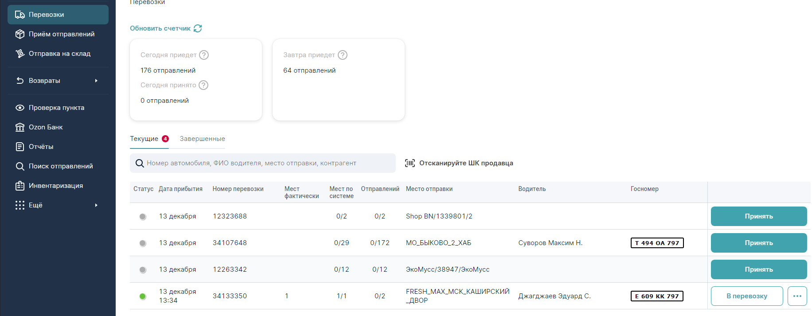
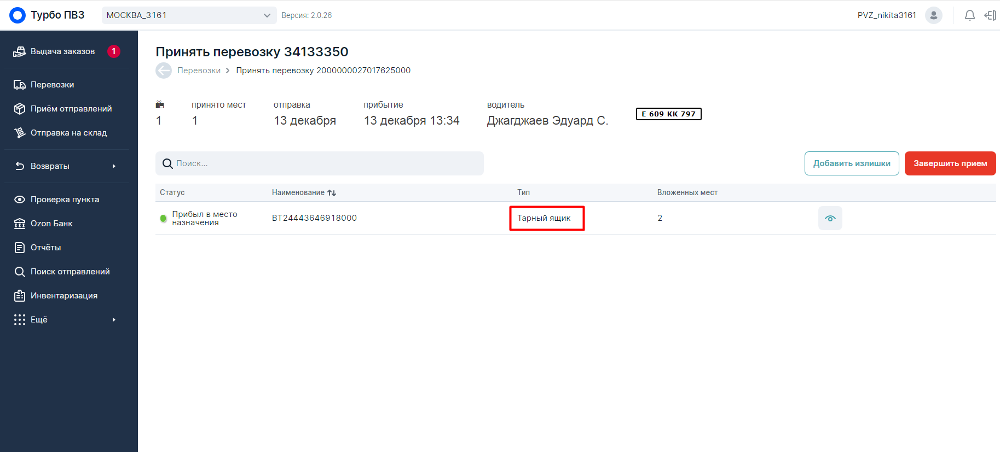

При приеме товара, есть три вида приема "Основная","Селлеры" и "Fresh".
Разберем "Основную" и "Fresh": Основная поставка - это та поставка, в которой приходит товар для клиентов вашего Пункта Выдачи Заказов (ПВЗ). Для того, что-бы начать принимать товар (пропикивать его), нужно принять "Перевозку". Все перевозки находятся во вкладке "Перевозки", слева. Жмем на нее и видим список всех доступных нам перевозок. Список перевозок готовые к отгрузкам
Это все, что должны в течении дня привезти и отдать нам. На данный момент нам нужно принять "Основную". Для этого ищем перевозку с местом отправки со склада, в данный момент у меня это МО_БЫКОВО_2_ХАБ (Ваши склады могут называться иначе).
Важно! Так же есть перевозки с местом отправки селлеров Они будут вместе с длинным номером (пример: Shop BN/1339801/2). В данный момент нужно что-то похожее на МО_БЫКОВО_2_ХАБ или Fresh
Далее находим и нажимаем "Принять" на нужной нам перевозке. Нас попросит ввести кол-во мест. Находим в столбике "Мест по системе" и вводим это количество.
После чего нас перекидывает примерно на такую страницу (картинка ниже)
Список ТЯ
Теперь нам нужно принять все тарные ящики (ТЯ). Для этого ищем все с типом "Тарный ящик". Справа будет кнопка "Принять", нажимаем на нее. Такое действие надо повторить со всеми ТЯ которые у вас будут в программе. (Выше прикреплена картинка, где красным отмечен пример)
После всех этих действий, мы переходим во вкладку слева "Прием отправлений" и просто начинаем пропикивать весь товар который вам привезли.
Прием поставки от селлера
Поставка от Селлера - это заказы, которые нужно принять, для дальнейшей отправки на склад, а от туда по другим клиентам.
Для того, что-бы начать принимать товар (пропикивать его), нужно принять "Перевозку". Все перевозки находятся во вкладке "Перевозки", слева. Жмем на нее и видим список всех доступных нам перевозок. (См. первый скриншет)
На данный момент нам нужно принять "Cеллера". Для этого ищем перевозку с местом отправки со склада, в данный момент у меня это Shop BN/1339801/2 (Ваши склады могут называться иначе). Далее находим и нажимаем "Принять" на нужной нам перевозке.
После чего нас перекидывает примерно на примерно такую же страницу, как скриншот выше.
После всех этих действий, мы переходим во вкладку слева "Прием отправлений" и просто начинаем пропикивать весь товар который вам привезли.
{kind=link}